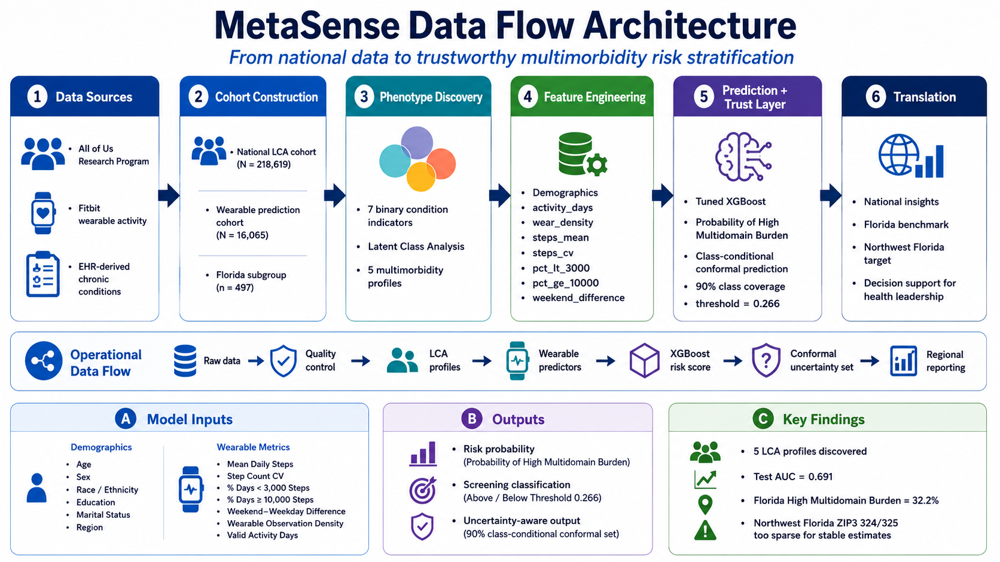

Trustworthy Wearable Intelligence for Mental–Metabolic Multimorbidity Stratification
Statistics and AI
Public Health, Cancer, Mental Health
Osteoarthritis, Physical Activity
Data Science, ML
Data Science, AI
Health systems often see chronic disease one condition at a time.
But mental-health burden, metabolic dysfunction, osteoarthritis, and cancer commonly cluster in ways that increase functional decline and care complexity.
MetaSense goal: use large-scale clinical data to discover multimorbidity profiles, then use passive wearable activity patterns to stratify high-burden risk.
Note
Use case: screening and population-health insight — not diagnosis or automated treatment decisions.

Key protection: diagnoses used to define LCA classes were not used as ML predictors.
| Cohort | Sample | Purpose |
|---|---|---|
| All of Us LCA cohort | 218,619 | Discover multimorbidity phenotypes |
| Wearable prediction cohort | 16,065 | Predict High Multidomain Burden from Fitbit + demographics |
| Florida subgroup | 497 | Regional benchmark |
| Northwest Florida ZIP3 324/325 | 5 | Too sparse for local estimates; future validation target |
Fitbit preprocessing: deduplicated person-day records, retained 100–100,000 daily steps, and required ≥30 valid activity days.
| Indicator | Present, n (%) |
|---|---|
| Mental-health burden | 113,193 (51.8%) |
| Obesity | 111,545 (51.0%) |
| Hypertension | 167,351 (76.5%) |
| Diabetes | 77,666 (35.5%) |
| Dyslipidemia | 61,888 (28.3%) |
| Osteoarthritis | 109,539 (50.1%) |
| Cancer | 34,183 (15.6%) |
Interpretation: this cohort contains substantial metabolic, musculoskeletal, cancer, and mental-health burden — ideal for phenotype discovery.
| Phenotype | Prevalence | Defining pattern |
|---|---|---|
| High Multidomain Burden | 33.2% | High MH, obesity, HTN, diabetes, OA, cancer enrichment |
| Hypertension-Dominant | 21.9% | Nearly universal HTN, lower diabetes/dyslipidemia |
| Obesity-Dominant | 19.6% | Universal obesity, lower broader cardiometabolic burden |
| Diabetes-Dominant | 14.9% | Universal diabetes, moderate HTN |
| Dyslipidemia/OA-Dominant | 10.5% | Dyslipidemia with OA and moderate HTN |
LCA quality: entropy = 0.769; mean max posterior probability = 0.849.
We first tested full five-class prediction from wearables + demographics.
Result: modest discrimination
Accuracy ≈ 0.42; macro-F1 ≈ 0.34
The hardest boundary was Diabetes-Dominant vs High Multidomain Burden, consistent with LCA posterior overlap.
Important
Clinical refinement: High Multidomain Burden became the primary actionable prediction target because it represents the broadest and most clinically complex phenotype.
After reducing highly correlated step features, the final model used:
Plus: age, sex at birth, race/ethnicity, education, marital status, and broad geographic region.
ZIP code/ZIP3 were retained for reporting, not entered into the ML model.
| Metric | Held-out Test Result |
|---|---|
| ROC AUC | 0.691 |
| Sensitivity | 0.715 |
| Specificity | 0.551 |
| PPV | 0.389 |
| NPV | 0.829 |
| F1 score | 0.504 |
| Brier score | 0.185 |
Interpretation: moderate but stable screening performance.
Calibration AUC = 0.687; test AUC = 0.691.
Risk gradient: observed High Multidomain Burden increased from 5.4% in the lowest predicted-risk decile to 54.8% in the highest.
Class-conditional conformal prediction at 90% nominal coverage:
| Output | n (%) | Meaning |
|---|---|---|
{Other} |
600 (24.9%) | Lower-burden pattern supported |
{HighBurden} |
312 (13.0%) | Elevated-burden signal |
{HighBurden, Other} |
1,498 (62.2%) | Uncertain; more information recommended |
Coverage: 90.8% HighBurden, 91.2% Other.
Florida subgroup: 497 participants
High Multidomain Burden: 32.2% vs 28.4% outside Florida.
Florida participants had:
Northwest Florida: current All of Us wearable sample is too sparse (n=5).
Next phase: validate MetaSense with regional clinical/community partners and connect the saved XGBoost + conformal model to the interactive dashboard.